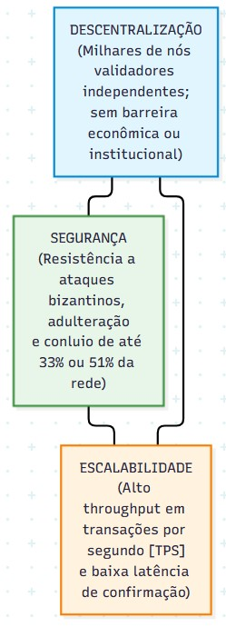
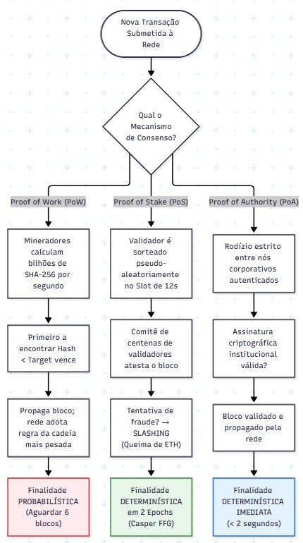
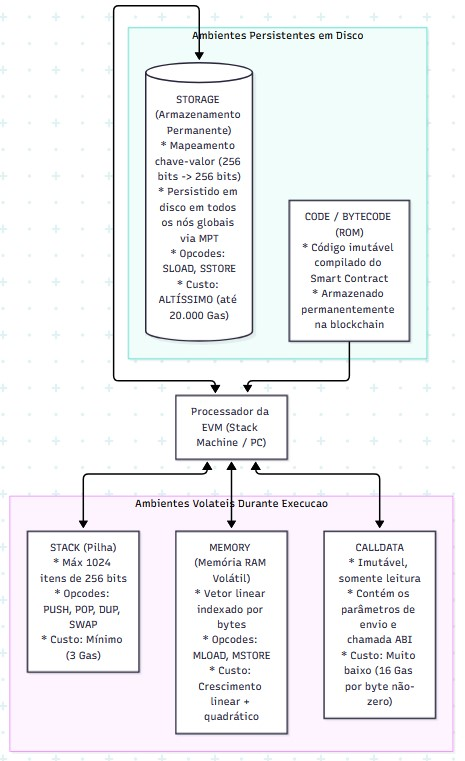
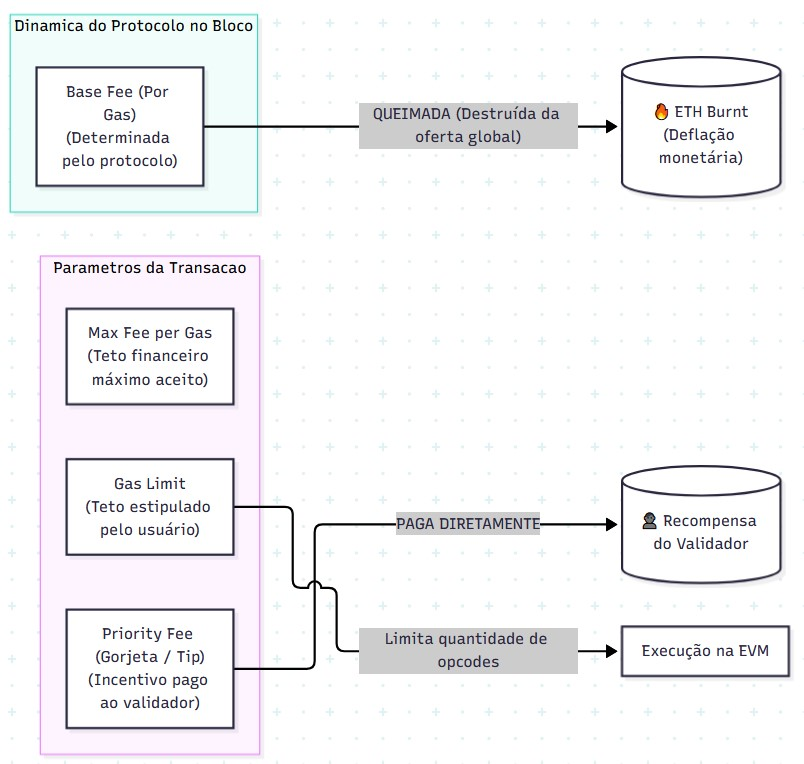

Aula 02: Mecanismos de Consenso Distribuído, a Rede Ethereum e a EVM
Como redes descentralizadas alcançam a verdade contábil e executam código imutável sem autoridade central
Disciplina: ISI022 — Sistemas de Informação e Tecnologias Emergentes
Docente: Prof. Me. André Cassulino Araújo Souza
Instituição: Centro Estadual de Educação Tecnológica Paula Souza (CEETEPS)
Carga Horária: 1h40 (60min Teórico-Conceitual | 40min Laboratório Prático Etherscan)
Na Aula 01 compreendemos a imutabilidade criptográfica e árvores de Merkle. Hoje, expandimos de uma planilha financeira estática para um computador mundial programável capaz de rodar sistemas corporativos autônomos.
Objetivos de Aprendizagem & Roteiro
A pergunta orientadora: como computadores que não se conhecem concordam sobre a verdade contábil?
Contextualização para Iniciantes: A Empresa do Livro-Caixa
Uma analogia prática para ancorar a compreensão de Sistemas de Informação descentralizados
- Consenso: É o estatuto de regras que decide quem tem o direito legítimo de escrever a próxima página do livro-caixa.
- Blockchain: É a pilha encadeada de páginas já assinadas e auditadas que ninguém pode apagar.
- EVM (Máquina Virtual): É um funcionário robô idêntico que roda em cada filial para executar contratos automáticos (ex: "se a carga chegou, libere o pagamento").
- Gas: É a quantia de combustível/taxa paga para evitar que alguém envie ordens com tarefas infinitas que travem os computadores de todos.
Se Alice tem apenas R$ 1.000,00 e envia simultaneamente R$ 1.000,00 para Bob e R$ 1.000,00 para Carlos em filiais diferentes, qual transação vale?
Sem um mecanismo de consenso rigoroso, a rede se dividiria e o dinheiro seria duplicado do nada. O consenso resolve a ordem cronológica inequívoca de cada transação no planeta.
O Desafio do Consenso em Redes Abertas
Coordenação bizantina sem autoridade central em arquiteturas Peer-to-Peer (P2P)
Formalizado por Leslie Lamport et al. (1982): Como generais que cercam uma cidade conseguem coordenar um ataque no mesmo instante se as mensagens são levadas por mensageiros que podem ser capturados ou se alguns generais forem traidores?
Na computação tradicional (Raft, Paxos), assume-se que os nós não são maliciosos (apenas sofrem panes). Em redes abertas de DLT, o algoritmo deve ser Tolerante a Falhas Bizantinas (BFT): sobreviver mesmo com nós deliberadamente tentando forjar dados!
Em um sistema sem cadastro centralizado (como a internet), um invasor pode criar 100.000 computadores virtuais falsos em segundos para votar em sua própria versão mentirosa da história.
Para neutralizar isso, o consenso exige um recurso escasso e
caro para votar:
• No PoW: gasto de energia elétrica real e hardware.
• No PoS: depósito de dinheiro real em garantia (staking).
• No PoA: identidade jurídica verificada em cartório/contrato.
O Trilema da Blockchain (Vitalik Buterin)
O trade-off fundamental entre Descentralização, Segurança e Escalabilidade

- Descentralização: Capacidade de qualquer usuário rodar um nó validador em um notebook comum, sem depender de datacenters gigantescos.
- Segurança: O custo financeiro e computacional para subverter ou paralisar a rede precisa ser astronômico (resistência a 51%).
- Escalabilidade (TPS): Capacidade de processar dezenas de milhares de transações por segundo com latência de poucos milissegundos.
Proof of Work (PoW — Prova de Trabalho)
A segurança ancorada no consumo maciço de energia e hardware computacional (Bitcoin)
Proposto por Satoshi Nakamoto (2008), o minerador empacota transações e procura exaustivamente por um número aleatório (Nonce) tal que:
- Força Bruta Pura: Devido ao Efeito Avalanche, a única forma de achar o hash válido é testando bilhões de nonces por segundo.
- Ajuste de Dificuldade: A cada 2.016 blocos (~2 semanas), a dificuldade se recalibra para manter o tempo médio do bloco fixo em ~10 minutos.
- Regra da Cadeia Mais Longa (*Heaviest Chain*):** A rede reconhece como verdade a cadeia com maior trabalho cumulativo comprovado.
• Máxima segurança probabilística comprovada há mais de 15 anos.
• Elimina a necessidade de qualquer identidade prévia.
• Consumo Elétrico: A rede Bitcoin consome tanta energia quanto países inteiros (ex: Argentina ou Noruega).
• Baixo Throughput: Limitado a ~7 transações por segundo.
• Finalidade Lenta: Requer ~6 blocos (1 hora) para confirmação segura de grandes valores.
Proof of Stake (PoS / Gasper — Prova de Participação)
A revolução energética e econômica da Ethereum pós-The Merge (2022)
Em 15 de setembro de 2022, a Ethereum extinguiu a mineração por placas de vídeo e adotou a Prova de Participação (*Proof of Stake*), reduzindo o consumo elétrico da rede mundial em **mais de 99,95%**!
- Depósito de Colateral (Staking): Cada validador deve depositar 32 ETH em um contrato oficial de custódia.
- Slots & Epochs:
• Slot: Janela estrita de 12 segundos onde 1 validador propõe o bloco.
• Epoch: Conjunto de 32 slots consecutivos (384s = 6,4 minutos). - Comitês de Atestação: Centenas de outros validadores independentes verificam o bloco e assinam atestações criptográficas.
A Ethereum combina dois protocolos para obter o melhor de dois mundos:
- LMD-GHOST: Regra de escolha da ponta da cadeia em tempo real a cada slot de 12s, permitindo que a rede nunca pare (*Liveness*).
- Casper FFG (*Friendly Finality Gadget*): Confere **Finalidade Determinística Absoluta**. Quando 2 épocas consecutivas recebem $\ge 2/3$ dos votos da rede global, o bloco é Finalizado (~12,8 minutos).
Teoria dos Jogos no PoS: Inactivity Leak & Slashing
Como incentivos financeiros e punições automáticas blindam a honestidade dos nós
Se o servidor de um validador cair (pane de hardware, queda de link de internet ou energia):
- O validador deixa de enviar suas atestações obrigatórias.
- O protocolo deduz gradualmente pequenas frações de seu saldo a cada época offline.
- A penalidade equivale aproximadamente à recompensa que ele teria ganhado se estivesse conectado.
- Objetivo: Forçar os operadores a investirem em redundância e estabilidade de infraestrutura.
Se um validador agir de má-fé tentando subverter o consenso (ex: assinar dois blocos diferentes no mesmo slot ou votar em cadeias concorrentes):
- Qualquer outro nó pode apresentar a prova criptográfica irrefutável do duplo voto.
- O protocolo aplica o Slashing: confisca e destrói (queima para sempre) parte substancial dos 32 ETH depositados.
- O validador infrator é ejetado compulsória e irrevogavelmente do consórcio de validadores.
- Resultado: Ser desonesto custa muito mais caro do que qualquer lucro possível!
Proof of Authority (PoA — Prova de Autoridade)
Consenso por identidade autenticada para consórcios corporativos e redes permissionadas
Em redes corporativas privadas (como Hyperledger Besu, R3 Corda e o ecossistema do DREX / Banco Central), os participantes são empresas e órgãos reguladores pré-aprovados.
- Identidade Jurídica: Os nós validadores pertencem a instituições formalmente autenticadas (ex: Banco Central, B3, Receita Federal, Bradesco, Itaú).
- Rodízio Determinístico (*Round-Robin*): A criação de blocos segue uma ordem estrita e rotativa pré-agendada.
- Sem Mineração: Não existe puzzle matemático de PoW nem capital imobilizado de PoS.
- Throughput Massivo: Capaz de processar de 1.000 a mais de 10.000 TPS facilmente.
- Latência Mínima: Blocos criados e finalizados em menos de 1 a 2 segundos.
- Previsibilidade de Custos: As taxas de transação podem ser pré-fixadas em zero ou em valores irrisórios estáveis.
- Conformidade Legal: Se uma instituição tentar cometer fraude, ela é punida administrativamente no mundo real com processos civis e criminais.
Matriz Comparativa Rigorosa dos Três Modelos
Comparativo lado a lado dos parâmetros de engenharia de software
| Critério Arquitetural | Proof of Work (PoW) | Proof of Stake (PoS / Gasper) | Proof of Authority (PoA) |
|---|---|---|---|
| Exemplo de Rede | Bitcoin, Litecoin | Ethereum (pós-Merge), Cardano | Hyperledger Besu, DREX, Redes Privadas |
| Recurso Escasso Exigido | Energia elétrica e hardware ASIC | Capital financeiro (32 ETH em stake) | Identidade jurídica e reputação |
| Consumo Energético | Altíssimo (TWh/ano) | Desprezível (99,95% menor) | Mínimo (como servidor web comum) |
| Tempo de Bloco / TPS | ~10 minutos | ~7 TPS | 12 segundos | ~15 a 30 TPS | 0,5 a 2 segundos | 1.000 a 10.000+ TPS |
| Tipo de Finalidade | Probabilística (~6 confirmações) | Determinística (~12,8 min) | Determinística Imediata (< 2s) |
| Mecanismo de Punição | Custo de eletricidade sem retorno | Slashing (destruição de ETH) | Revogação de chave e processo judicial |

Simulação ao Vivo: PoW vs. PoS Slashing
Experimente diretamente na tela o custo computacional do PoW e a punição por Slashing no PoS
Objetivo: Encontrar um Nonce por força bruta até que
o hash comece com 0000.
Objetivo: O validador Node_Beta assina 2 blocos diferentes no mesmo slot de 12s.
Modelos de Dados: UTXO (Bitcoin) vs. Contas (Ethereum)
Onde o valor reside e como o novo estado da rede é transformado
Unspent Transaction Output (Saída Não Gasta):
- Opera como cédulas de papel físico indivisíveis.
- Não existe um campo
saldo = 10 BTCem uma tabela. - Para pagar 2 BTC tendo uma cédula de 10 BTC: a cédula inteira é destruída no Input, gerando uma nova cédula de 2 BTC para o destinatário e uma nova cédula de troco de 8 BTC para você.
- Linguagem Script: Propositalmente Não-Turing Completa (sem loops
while/for) para evitar travamentos.
Account-Based Model (Modelo de Conta Corrente):
- Opera como um banco de dados relacional de contas bancárias.
- O estado global armazena o saldo atualizado e o histórico de cada endereço.
- Para enviar 2 ETH de um saldo de 10 ETH: debita-se 2 ETH da conta remetente e credita-se 2 ETH na conta de destino diretamente.
- Vantagem em SI: Permite que contratos inteligentes armazenem dados persistentes, arrays e estados complexos.
Anatomia de uma Conta na Rede Ethereum
A quádrupla de campos que define tanto usuários humanos quanto Contratos Inteligentes
- Conta de usuário comum, controlada exclusivamente por uma chave privada humana (ex: carteiras MetaMask).
- É a única que pode iniciar uma transação ativamente.
- Não possui código (seu
codeHashé vazio) e não possui armazenamento interno (storageRootvazio).
- Controlada por código executável imutável (bytecode compilado).
- Não possui chave privada; executa apenas em reação a transações recebidas de EOAs ou de outros contratos.
- Possui seu próprio armazenamento persistente em disco (
storageRoot).
| Campo da Quádrupla | Significado em Ciência da Computação | Comportamento em EOA | Comportamento em Smart Contract |
|---|---|---|---|
nonce |
Contador sequencial anti-duplicação | Quantidade de transações enviadas | Quantidade de novos contratos criados |
balance |
Saldo financeiro nativo (em Wei) | Patrimônio do usuário | Fundos sob custódia do contrato |
storageRoot |
Raiz da árvore Merkle Patricia | Hash de árvore vazia | Raiz que ancora todas as variáveis em disco |
codeHash |
Hash Keccak-256 do bytecode | Hash de string vazia | Hash do código executável imutável |
A Ethereum como Máquina de Estados Finita Transacional
A formulação matemática do Ethereum Yellow Paper de Gavin Wood
$\sigma_t$ = Estado Global no instante $t$ | $T$ = Transação válida | $\Upsilon$ = Função de Transição de Estado da EVM | $\sigma_{t+1}$ = Novo Estado Global
Na ciência da computação, a EVM é um autômato determinístico global. Se a transação $T$ tiver saldo suficiente e for bem-sucedida, o estado avança para $\sigma_{t+1}$.
Se ocorrer qualquer erro no meio do caminho (falta de saldo, violação de regra ou falta de gas), a EVM faz um Rollback Atômico: todas as escritas em variáveis são desfeitas ($\sigma_{t+1} = \sigma_t$), garantindo integridade estrita.
Para que os nós não precisem guardar gigabytes redundantes a cada bloco, o estado da Ethereum é mantido em uma Árvore Merkle Patricia.
O cabeçalho de cada bloco Ethereum armazena apenas três hashes mestres de 32
bytes:
• State Root: O resumo criptográfico de todas as contas do mundo.
• Transactions Root: O resumo de todas as transações do bloco.
• Receipts Root: O resumo de todos os recibos e logs de eventos.
A Arquitetura da Máquina Virtual Ethereum (EVM)
Uma Stack Machine de 256 bits executando em sandbox global determinística
for, while). Mas isso cria um risco mortal... o Problema da Parada!
Os Quatro Espaços de Memória da EVM
Características físicas, ciclo de vida e discrepâncias extremas de custo de Gas

1. Stack (Pilha): Máx 1024 posições de 256 bits. Custo quase zero (3 Gas). Volátil (desaparece ao fim da função).
2. Memory (Memória RAM): Array linear de bytes temporário para arrays e strings. O custo cresce quadraticamente com a expansão.
3. Calldata: Parâmetros de entrada enviados na transação. É somente leitura e imutável (custo baixo de 16 Gas por byte não-zero).
4. Storage (O Disco Rígido): Mapa chave-valor de 256 bits persistido para sempre nos HDs de todos os computadores do mundo! É a operação mais cara da EVM (`SSTORE` = até 20.000 Gas).
Bytecode e Execução Passo a Passo na Mini-EVM
Como contratos Solidity são traduzidos em opcodes executados na máquina de pilha
(10 + 25) * 2 e salvar no Slot 0x01
O Halting Problem de Alan Turing e a Solução do Gas
Como evitar que um loop infinito paralise todos os servidores do planeta Terra
Alan Turing provou matematicamente que é impossível criar um algoritmo prévio que analise qualquer código arbitrário e diga se ele vai terminar ou entrar em loop infinito.
Se alguém enviar um contrato com
while(true) {} para a blockchain, como todos os
computadores do mundo devem rodar o código, o planeta inteiro congelaria!
A Ethereum resolveu o Halting Problem através da medição física por combustível pré-pago:
- Cada opcode consome uma quantidade exata de Gas estipulada no Yellow Paper.
- O remetente define um teto máximo de combustível: o Gas Limit.
- A cada instrução executada, o contador diminui.
- Se o contador chegar a zero antes de terminar, a EVM dispara a exceção Out of Gas (OOG): o programa é sumariamente interrompido, o estado reverte e o invasor perde o dinheiro do gas gasto!
A EIP-1559 e o Mecanismo de Queima de ETH
A reestruturação algorítmica do mercado de taxas pós-Hard Fork London

- Base Fee (Taxa Mínima Algorítmica): Regulada pelo protocolo com base na ocupação do bloco anterior (meta: 15M gas). É QUEIMADA (destruída da oferta mundial)!
- Priority Fee (Gorjeta / Tip): Paga diretamente ao validador para furar a fila da mempool.
- Efeito Deflacionário (*Ultrasound Money*): Quando a rede tem muito uso, queima-se mais ETH do que é emitido em recompensas, reduzindo a oferta total do ativo no mundo!
Calculadora Interativa de Taxas EIP-1559
Ajuste os parâmetros da rede e observe em tempo real a divisão entre queima de ETH e recompensa
Rastreamento e Dissecação Forense no Etherscan
Como auditar transações reais na Testnet Sepolia ou Ethereum Mainnet
- Localize uma transação EOA $\to$ EOA.
- Constatar que o Gas Used é exatamente 21.000 (100% de uso).
- Identificar a Base Fee e a quantidade de ETH queimada para sempre no campo Burnt Fees.
- Identifique o ícone de contrato no campo
To. - Verifique que o Gas Used foi menor que o Gas Limit (troco estornado ao usuário).
- Decodifique o Input Data para achar o
MethodID(4 bytes hex). - Inspecione a aba Logs para ver os eventos emitidos consumidos por ERPs.
- Filtre por transações com status
FailouReverted. - Se o erro for Out of Gas, constate que 100% do Gas Limit foi cobrado.
- Verifique que o
Value(ETH) não saiu da carteira (Rollback atômico da EVM preservou os fundos!).
O Mapa Conceitual Integrado da Aula 02
Conectando os cinco elos da cadeia de processamento distribuído
Caderno de Exercícios Práticos & Investigativos
6 atividades guiadas integrando código Python, investigação em exploradores e raciocínio de SI
nonce em contas Ethereum para detectar e
bloquear sumariamente tentativas de Replay Attack (duplicação maliciosa de pacotes
assinados).
Aula02_Exercicios.ipynb.
Bibliografia Canônica & Gancho para a Aula 03
Fundamentação acadêmica de fronteira e próximos passos da disciplina
1. BUTERIN, Vitalik. Ethereum Whitepaper. 2014.
2. WOOD, Gavin. Ethereum Yellow Paper (Berlin Version). 2014-2024.
3. ANTONOPOULOS, A. M.; WOOD, G. Mastering Ethereum. O'Reilly, 2018.
4. BUTERIN, V. et al. EIP-1559: Fee market change for ETH 1.0. 2019.
5. TURING, Alan M. On Computable Numbers (Halting Problem). 1936.
6. LAMPORT, L. et al. The Byzantine Generals Problem. ACM TOPLAS, 1982.
Tema: Smart Contracts (Solidity), Tokenização RWA e Aplicações em SI
- Programação em linguagem Solidity (modificadores, eventos, funções payable).
- Padrões de tokens da economia real: ERC-20 (fungíveis) e ERC-721/1155 (NFTs).
- Desenvolvimento prático e deploy de um contrato de rastreabilidade e Tokenização de Ativos do Mundo Real (RWA) no Remix IDE!